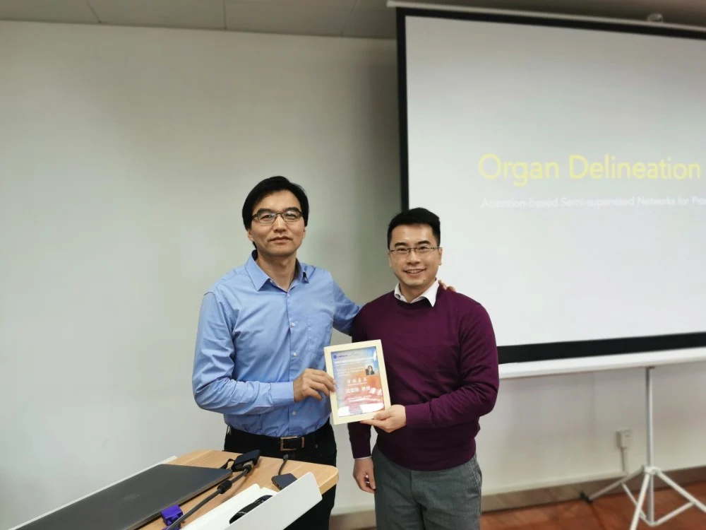
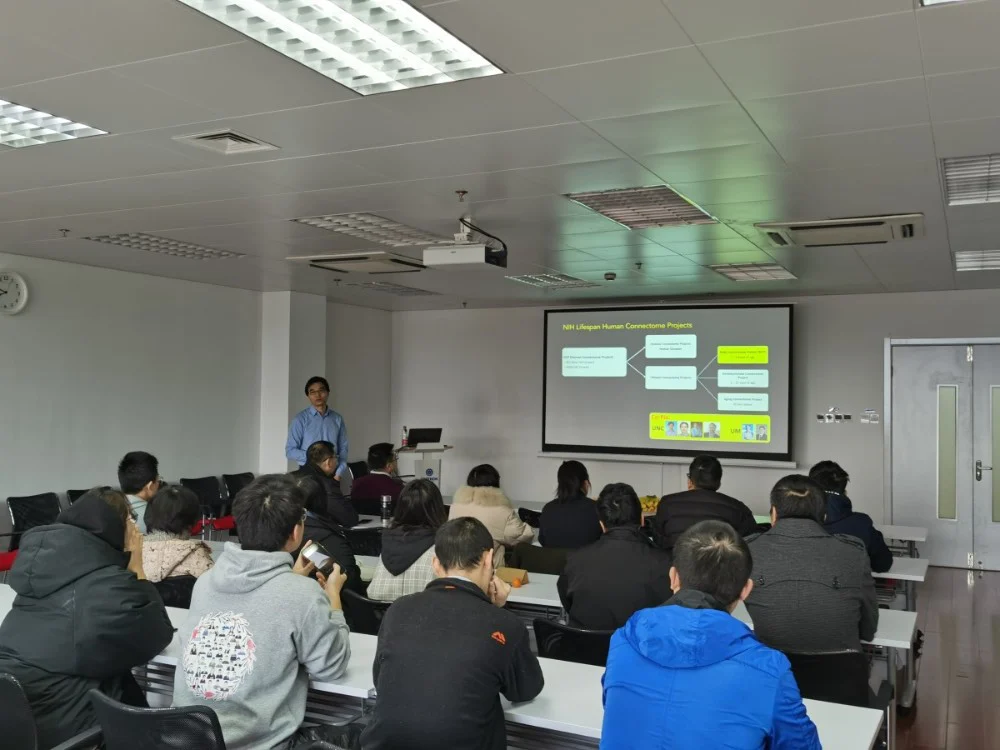
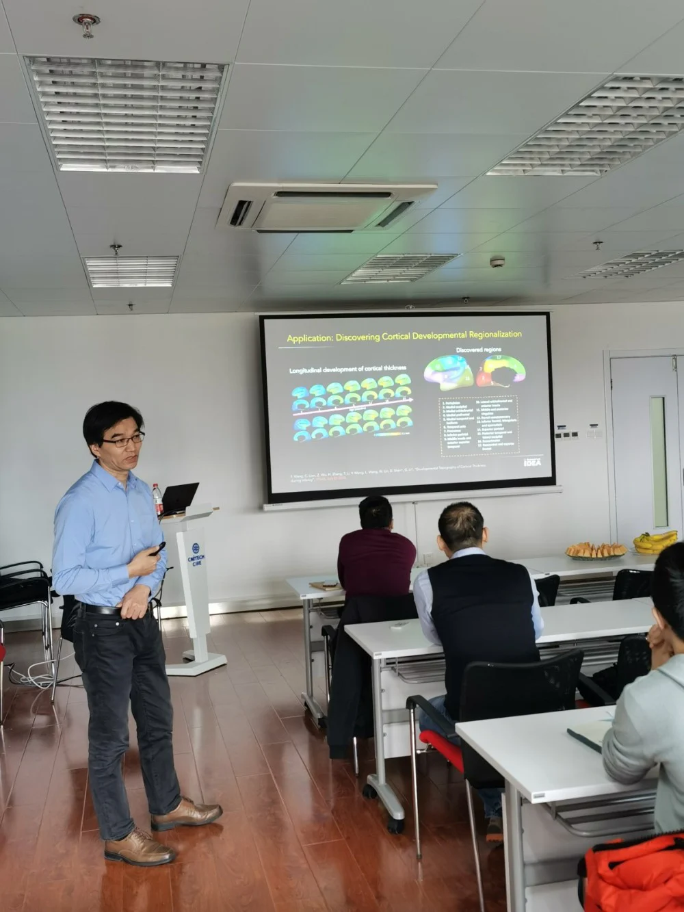
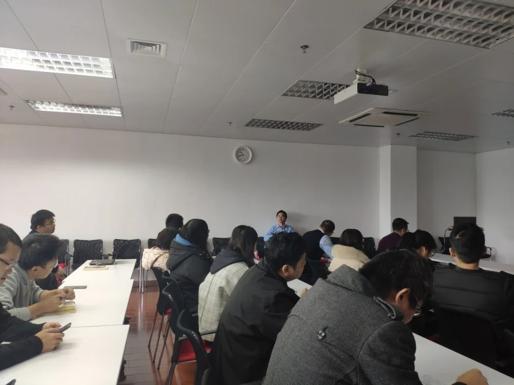

沈定刚教授于2019年12月28日至iMED进行访问交流，沈定刚教授是杰弗里·霍普特（Jeffrey Houpt）杰出研究员，北卡罗来纳大学教堂山分校（UNC-CH）放射学、生物医学影像中心（BRIC）、计算机系、生物医学工程系终身教授。他目前正在领导现任北卡罗来纳大学教堂山分校影像分析及信息中心主任，IDEA实验室主任，BRIC医学影像分析主任。曾任宾夕法尼亚大学助理教授（tenure-track）及约翰霍普金斯（Johns Hopkins University）大学正式教职。沈博士的研究方向包括医学图像分析、计算机视觉和模式识别。他在国际期刊和会议记录上发表了1000多篇论文，H-index指数95。他是八种国际期刊的编辑委员会成员。2012-2015年，他还曾在医学图像计算和计算机辅助干预协会（MICCAI）执委会任职，并担任2019年MICCAI的总主席。现为美国医学及生物工程学会（AIMBE）会士（Fellow），IEEE的会士，也是国际模式识别学会（IAPR）会士。

本次讲座，沈定刚教授介绍了他们最近利用深度学习方法在脑量化和癌症放射治疗方面的研究工作。具体来说，为了自动量化出生后第一年的早期大脑发育，即为了早期识别自闭症等脑部疾病，已经开发了基于深度学习的脑图像分割和皮层表面分割。为了早期诊断阿尔兹海默症（AD）并有可能早期治疗，人们将深度学习应用于无监督的脑部信息配准，以便进行精确的学科间比较和基于不同区域的疾病诊断。此外，为了有效地治疗前列腺癌，特别是基于MRI的癌症治疗，一种新的上下文感知GAN（Generative Adversarial Networks）被开发出来用于从MRI合成CT。另外，两种新的深度学习技术已经被开发出来，用于从计划的CT图像中自动精确地分割盆腔器官，以更好地指导放射治疗。本次讲座将解释每一个医学问题的临床意义和每一项发展技术的动机。


沈定刚教授此次的讲座给iMED带来了深刻的学术熏陶和启发。报告会精彩纷呈，内容详实。在分享会结束后，广大师生就感兴趣的问题向沈定刚教授踊跃提问，沈定刚教授耐心解答，双方互动热烈，在场师生都表示受益匪浅。通过本次交流，进一步加深了同学们对医学图像研究方面国际尖端水平的了解和深入研究的信心。
